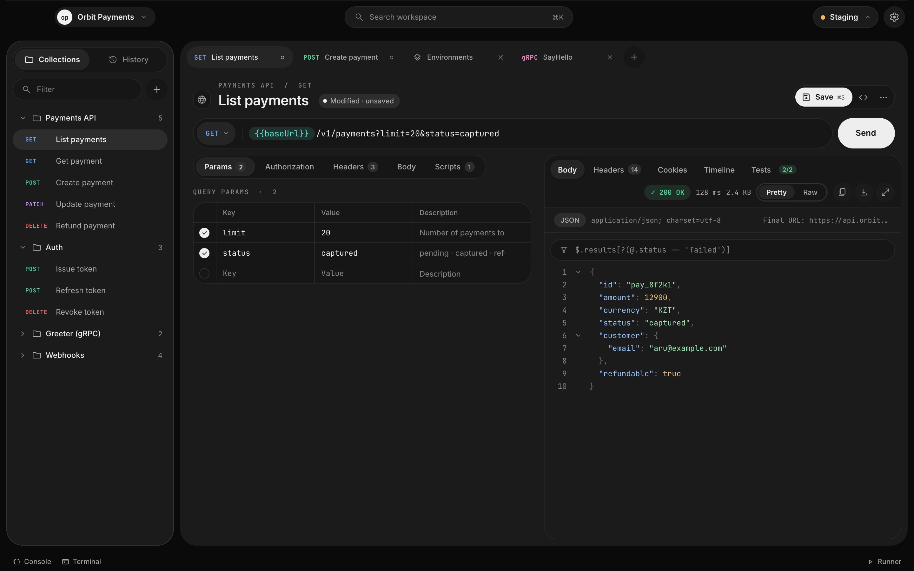
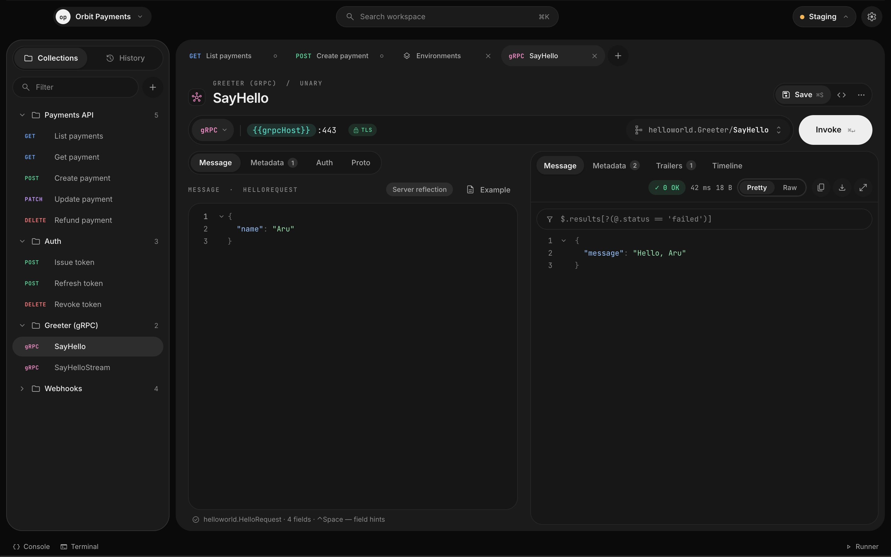

Open a directory
Your collections are folders. You can keep them in the same repository as the API.
LOCAL-FIRST API WORKSPACE
Send HTTP and gRPC requests in a native desktop app. Keep them beside your code as readable files. Run the same workspace from your terminal or an AI client.
{
"name": "List payments",
"protocol": "http",
"request": {
"method": "GET",
"url": "{{baseUrl}}/v1/payments"
}
}THE DESKTOP APP
Build the request, read the response, and keep your collections in view.

Real Bonk interface · example data
THE WORKFLOW
Start with an empty directory. Bonk saves each request as a file you can review, share, and run again.
Your collections are folders. You can keep them in the same repository as the API.
Send HTTP requests or discover gRPC services. Inspect bodies, headers, timing, and errors.
Save a .bonk.json file, add variables and tests, then run it in the app or CLI.
BUILT FOR THE ENTIRE REQUEST
Everything stays close to the request and the workspace that owns it.
Work with auth, headers, bodies, GraphQL, and formatted responses. Use reflection or local proto files to call gRPC methods.
Explore requests
Use named environments, {{variables}}, pre-request scripts, and response tests. Keep
secrets in the OS keychain when available.
Choose request order, data rows, and failure behavior in Runner. Use the Bonk CLI for repeatable checks in CI.
Run a collectionBONK / MCP
Bonk includes a headless MCP server. Compatible clients can discover saved requests, edit files, and call APIs with the permissions you choose. The desktop app can install the local integration for supported clients.
GET STARTED
Bonk is free, open source, and ready for a local workspace.
macOS (Apple Silicon) · Windows (x64) · Linux (x64)